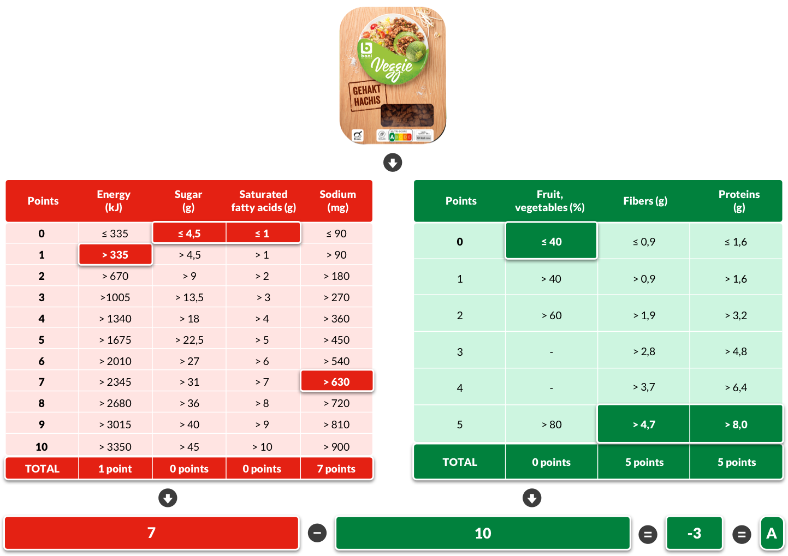
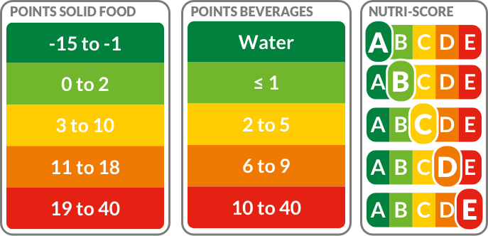

Nutri-score
Nutri-score is a nutritional labelling system which takes the nutritional value of a product and converts it into a simple value system that everyday people can instantly understand. The value system has 5 different levels represented by letters, A to E. Each letter has a colour that uses a well-known colour system, for example, traffic lights. A is green and is the best nutritional value a product can have. E is red and is the worst nutritional value a product can have.
 How is it calculated?
Nutri-score uses a point system in order to calculate a product's Nutri-score. The substances, for example, proteins or sugar are divided into two categories, good (green) and bad (red). Depending on the amount of a certain substance it will get a different number of points. In this example, sugar gets 0 points. The total number of points for each category are then taken away from each other. In this example, the first category's total number of points is 7 and the second's total number of points is 10. Therefore the resulting Nutri-score value is -3. The resulting number is converted into the corresponding Nutri-score label aka letter. In this example, the Nutri-score value of -3 results in this product getting an A level.
For further information on Nutri-score, visit https://nutriscore.colruytgroup.com/colruytgroup/en/about-nutri-score